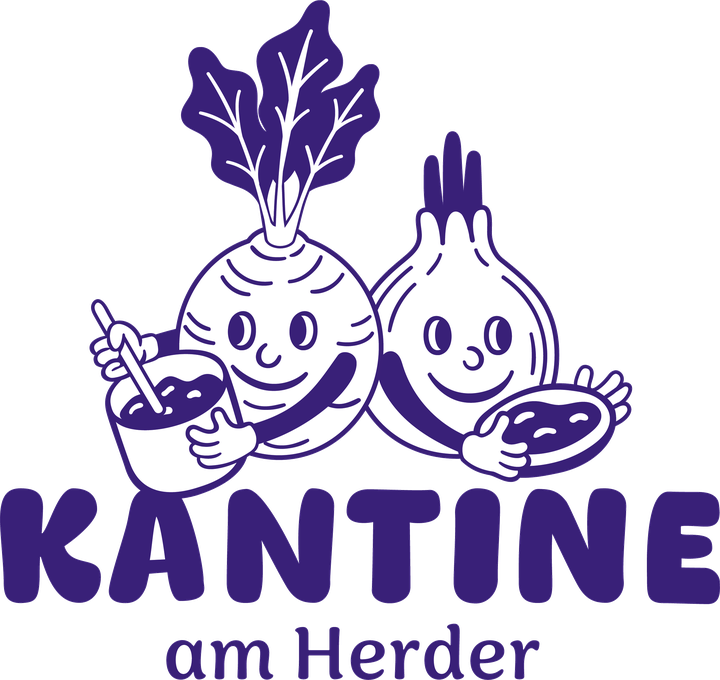
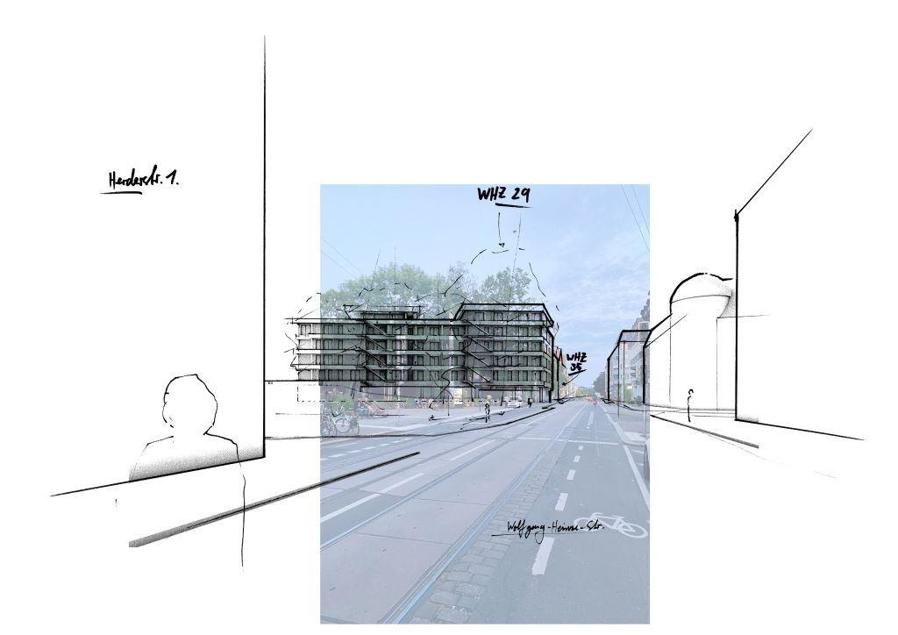

50 %
Küchenausstattung
Küchengeräte, Spüle und Arbeitsflächen – die technische Grundausstattung für den Mittagstisch von Montag bis Freitag.

Fundraising Kampagne
Im Sommer 2027 wollen wir im genossenschaftlichen Neubau LEIKA die Kantine am Herder eröffnen – einen Ort, der gemeinsames Essen und soziale Projekte zusammenbringt und mit solidarischen Preisen das Miteinander stärkt. Wir planen einen Mittagstisch von Montag bis Freitag mit wechselndem, überwiegend pflanzlichem und vegetarischem Angebot sowie einen Nachbarschaftstreff im Gastraum. Dafür benötigen wir eure Unterstützung!

Die Kantine am Herder gibt es noch nicht – sie entsteht gerade im genossenschaftlichen Neubau LEIKA und soll im Sommer 2027 eröffnen. Geplant sind ein Mittagstisch von Montag bis Freitag mit wechselndem, überwiegend pflanzlichem und vegetarischem Angebot und ein Nachbarschaftstreff im Gastraum der Kantine.
Wir kochen für eine möglichst breite Masse: günstig, frisch und überwiegend pflanzlich und vegetarisch – aber nicht ausschließlich. Dafür kooperieren wir mit solidarischen Landwirtschaften und Vereinen wie Machtlos e. V. Deine Spende finanziert Küchenausstattung und Gastraumeinrichtung.
Jeder Euro, den wir jetzt sammeln, spart später Kreditkosten im Neubau. Je früher wir starten, desto schneller wird die Kantine ein fester Ort im Viertel.
Küchengeräte, Spüle und Arbeitsflächen – die technische Grundausstattung für den Mittagstisch von Montag bis Freitag.
Tische, Stühle und Theke – für den Mittagstisch und den Nachbarschaftstreff.
Geschirr, Besteck und erste Zutaten über unsere Kooperationen mit solidarischen Landwirtschaften.
Planung, Genehmigungen, Versicherungen und Kommunikation rund um den Start.
Auch wenn wir das Ziel von 50.000 € nicht zu 100 % erreichen: Jeder gesammelte Euro wird vollständig für Küchenausstattung und Gastraumeinrichtung eingesetzt.
Jetzt 25 € über PayPal spenden
DE00 1234 5678 9000 1234 5678 Ab 50 € stellen wir dir gerne eine Spendenquittung aus.
Eine Marke kostet 17 €. Dafür bekommst du später ein Essen bei uns – einlösbar ab der Eröffnung im Sommer 2027. Der Solidaritätsbeitrag fließt direkt in die Einrichtung der Kantine.
1× Soli-Essenmarke – 17 € über PayPal
Oder per Banküberweisung (IBAN siehe oben): Verwendungszweck „Soli-Essenmarke“ plus Anzahl, z. B. „Soli-Essenmarke 5ד.
Du kannst uns auch direkt Geld leihen – zum Beispiel zinslos. Wie das genau funktioniert (Laufzeit, Rückzahlung, Vertrag), erklären wir ausführlich in unserem Blog. Blog folgt in Kürze.
Interesse? Schreib uns: kontakt@fundraiskantine.de
Ein ehrenamtliches Team des Fördervereins Kantine e. V. organisiert die Kampagne – mit Unterstützung aus der Elternschaft, dem Kollegium und der Nachbarschaft.
Genau so, wie im Abschnitt „Verwendung" beschrieben. Nach Kampagnenende veröffentlichen wir einen transparenten Verwendungsbericht.
Eine Marke kostet 17 €. Nach Zahlungseingang (PayPal oder Überweisung mit Verwendungszweck „Soli-Essenmarke“ + Anzahl) bekommst du pro Marke einen persönlichen Code per E-Mail – 1 Code = 1 Essen. Einlösen kannst du die Marken ab der Eröffnung im Sommer 2027, indem du den Code vor Ort zeigst.
Ja. Ab 50 € stellen wir dir eine Quittung aus – bei PayPal automatisch, bei Banküberweisung auf Anfrage per E-Mail an kontakt@fundraiskantine.de.
Auch wenn wir die 50.000 € nicht ganz erreichen: Jeder Euro wird direkt für Küchenausstattung und Gastraumeinrichtung verwendet. Fehlendes Geld holen wir über Folgekampagnen und Direktkredite.
Sehr gerne! Melde dich dazu einfach per E-Mail an kontakt@fundraiskantine.de – zum Beispiel für Küchengeräte, Geschirr oder Möbel.
Fragen zur Kampagne oder Interesse an einer Kooperation? Schreib uns einfach:
Förderverein Kantine e. V., Musterstraße 1, 12345 Musterstadt · kontakt@fundraiskantine.de
Diese Seite verarbeitet keine personenbezogenen Daten und setzt keine Cookies. Das Kontaktformular öffnet nur dein E-Mail-Programm.